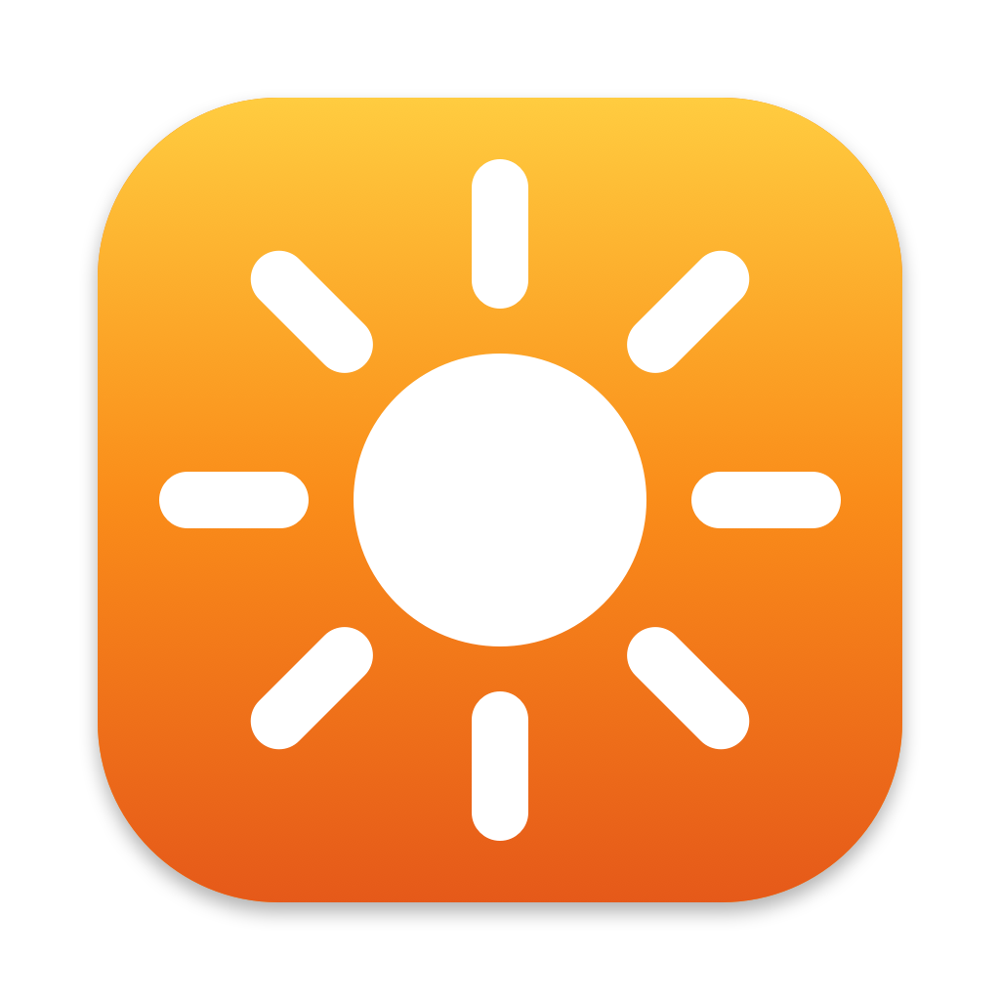
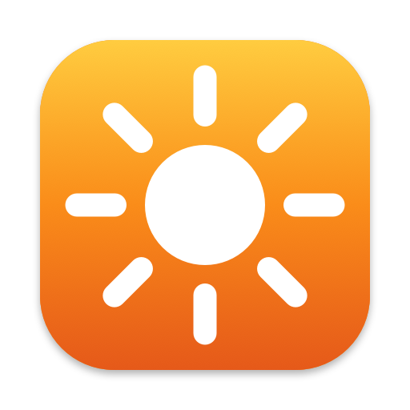

Control the brightness and volume of external monitors from your Mac — with your keyboard's own brightness and volume keys, over DDC/CI.

Overview
Third-party monitors ignore the brightness and volume keys on a Mac keyboard. Shine fixes that. It lives in your menu bar and speaks the DDC/CI protocol to external displays, so your keyboard's own keys adjust the monitor under your pointer — with a macOS-style on-screen HUD, just like the built-in display.

How It Works
Shine communicates over the DDC/CI protocol (VESA MCCS): brightness is VCP code 0x10, speaker volume 0x62, and mute 0x8D. On Apple Silicon the I2C channel is reached through the private IOAVService API, resolved at runtime. Media keys are intercepted with a CGEventTap, which is why the app needs Accessibility permission.
IOAVService I2C accessTech Stack